Independent analysis · reasoning-RL systems
How TLT / FastRL accelerates reasoning-RL training by overlapping otherwise-idle work in time, while keeping training token-level lossless and strictly on-policy.
Reinforcement-learning training of reasoning LLMs is throttled by a long-tail rollout problem: a handful of very long generations dominate each step while most workers sit idle. TLT attacks this not by approximating the algorithm but by overlapping otherwise-idle work in time. Its two pillars, an Adaptive Drafter trained opportunistically on idle GPUs during the tail, and an Adaptive Rollout Engine that turns on speculative decoding (SD) exactly when the batch shrinks into SD's sweet spot, convert wasted tail bubbles into useful compute while keeping training token-level lossless and strictly on-policy.
The paper reports over 1.7× end-to-end speedup over state-of-the-art systems, with a figure-level range of 1.7–2.1× over VeRL, a geomean of 1.86× on H100 and 1.79× on A100, and a peak of 2.12× on Qwen-32B/H100. Rollout alone is about 85% of step time. This work frames TLT around its asynchrony and concurrency mechanisms, pairs each with its measured speedup and its location in the released code, develops a mathematical model of where the gains come from and why they saturate, and contrasts TLT's lossless synchrony with the off-policy drift risked by fully asynchronous RL systems. The thesis: you can capture async-style utilization gains without paying the correctness tax of async RL.
>1.7× end-to-end 1.86× / 1.79× geomean (H100 / A100) 2.12× peak ~85% rollout 11/11 mechanisms code-confirmed ~118 sourced claims
Single-column, US Letter, 24 pages. If the inline viewer does not load in your browser, use the download button.
Every quantitative or mechanistic claim in the paper carries one of four tags, so a reader always knows where it came from.
[Paper: §/Fig/Tbl]Measured in the source paper.
[Dashboard: Model Math §N]Modeled and assumption-based (Eric Hibbs). Not a paper result.
[Code: path]Confirmed in the released fastrl source.
[Author synthesis]This document's own derivation or framing.
Vector figures regenerated from inline data arrays. Tags mark measured vs modeled vs schematic. Full provenance is in figures/manifest.md.
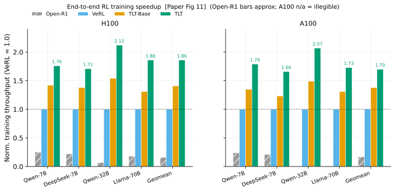
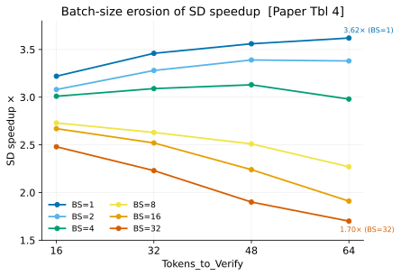
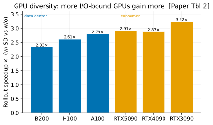
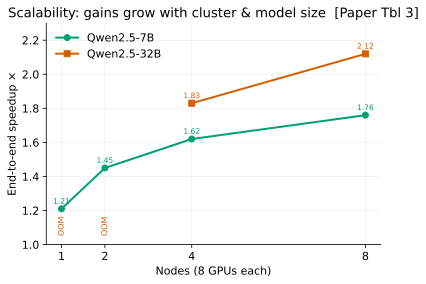
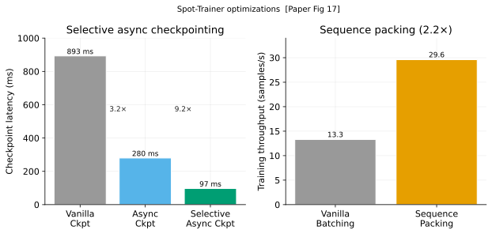
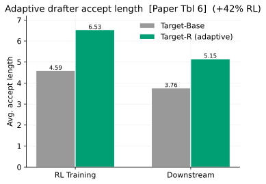
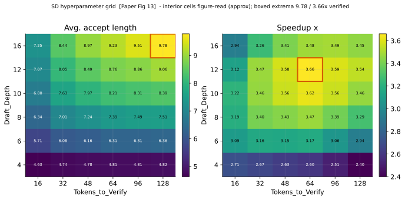
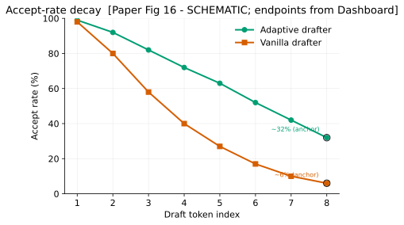
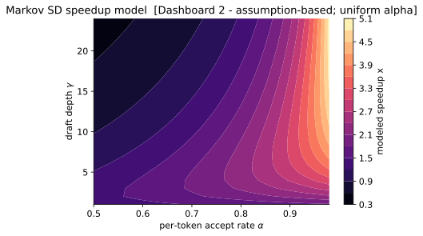
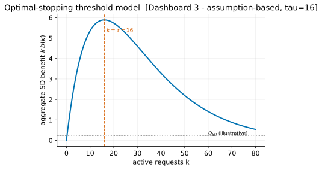
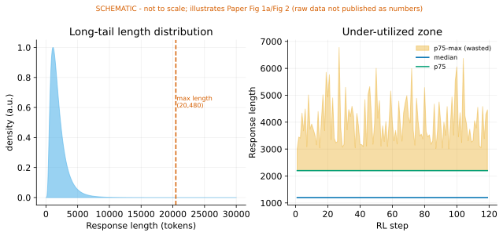